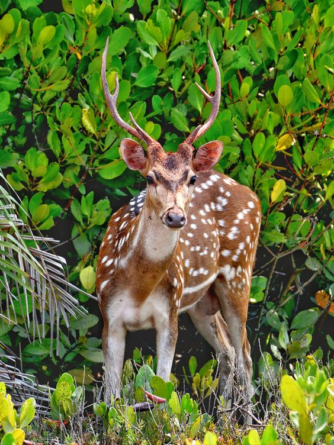

Bangladesh

বাংলাদেশের বিভাগগুলো হলো:
- ঢাকা বিভাগ
- চট্টগ্রাম বিভাগ
- রাজশাহী বিগভা
- খুলনা বিভাগ
- সিলেট বিভাগ
- বরিশাল বিভাগ
- রংপুর বিভাগ
- ময়মনসিংহ বিভাগ
The Extinct Animals
Bangladesh Natures
Bangladesh has a land of enormous beauty, hundreds of serpentine rivers, crystal clear water lakes surrounded by ever green hills, luxuriant tropical rain forests, beautiful cascades of green tea gardens, world's largest mangrove forest preserved as World Heritage, home of the Royal Bengal Tiger and the wild lives, ... ature seems to have lavishly bestowed on this land all her beauty and bounties. It is truly called the ‘treasure trove’ of nature. Bangladesh is very rich in flowers, vegetation and green fields. The blue sky, the green fields, the yellow corns have an unending fascination for all. Seeing the uncommon beauty of Bangladesh Jibananda Das, our Bengali poet exclaims with ecstatic joy, “I have seen the beauties of Bangladesh. So I no longer want to seek the beauty of the world.” The beauties of Bangladesh have been praised greatly by the travellers. The green plains and meadows, the rivers, the clear blue sky, the scenes of hills and mountains have made this country unequal in the world in natural beauty.
Bangladesh Educatioal System
The foundation of the educational system in Bangladesh was laid down during the period of British rule. The system has three levels—primary, secondary, and higher education. Primary and secondary education are both compulsory, though universal participation has remained more an ideal than a fact. Primary education consists of eight years, while secondary education lasts four years. Secondary education is divided into a lower level and a higher level, and public examinations are held at the conclusion of each level of schooling. Schools in cities and towns are generally better-staffed and better-financed than those in rural areas.